Suivi
Semaine 1
X fenetré :
Bourdiaux Pierre
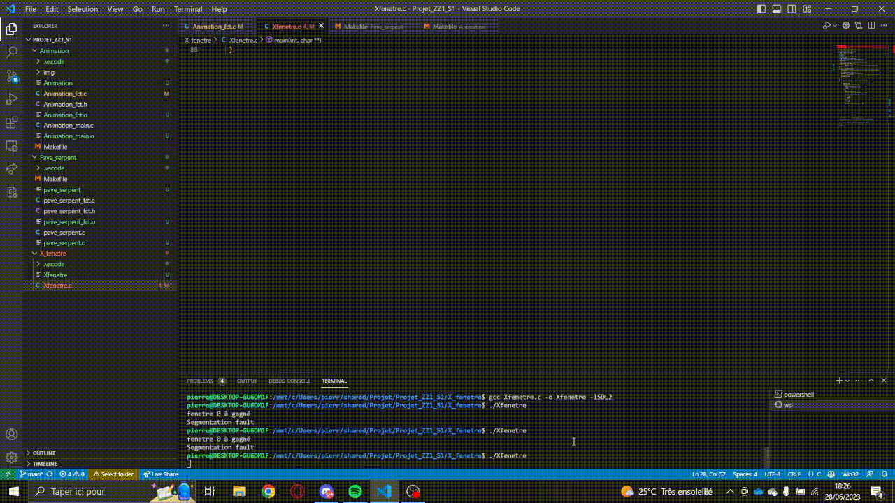Il y a 5 fenêtres qui sont créées sur le même axe 'X' et les fenêtres avancent à pas aléatoire (Si le pas est grand la fenêtre s'étire (largeur) sinon elle s'allonge (longueur)). Ce programme donne un effet de 'course de fenêtres. Il y a une vérification pour savoir quelle fenêtre est arrivé en première.
Momen Morgan
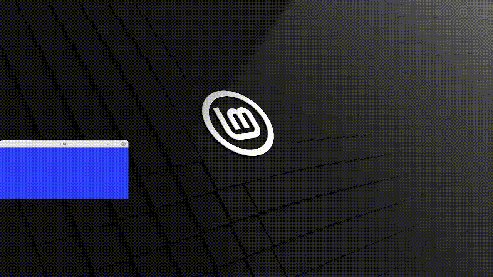C'est une fenêtre que rebondit dans l'écran comme le fameux l'écran avec le logo DVD qui rebondit lorsqu'on avait pas de signal.
Bonnet Pierre
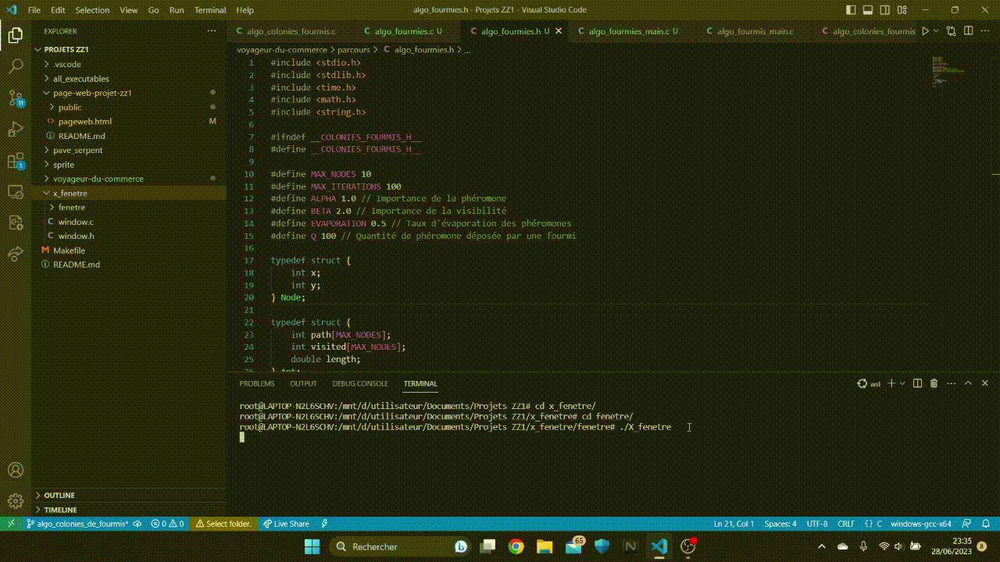Il y a 8 fenêtres qui chutent plus où moins à la même vitesse car c'elle-ci est aléatoire entre chaque étape.
Pavé Serpent :
Bourdiaux Pierre
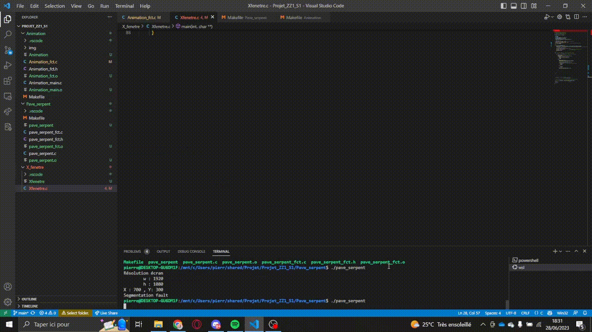En créant les formes au bon endroit, j'ai créé deux moutons et lorsque l'on appuie sur 'espace', le mouton de derrière saute sur celui de devant pour faire un saute-mouton.
Momen Morgan
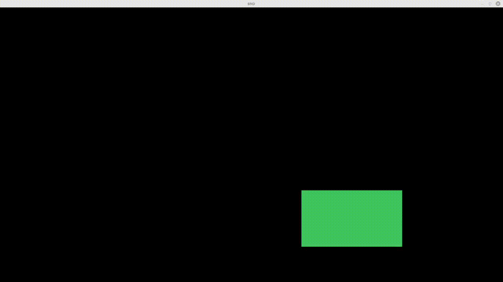Il s'agit d'un rectangle qui rebondit dans une fenêtre ( les rebonds de celui-ci s'adapte en direct à la taille de la fenêtre).
Bonnet Pierre
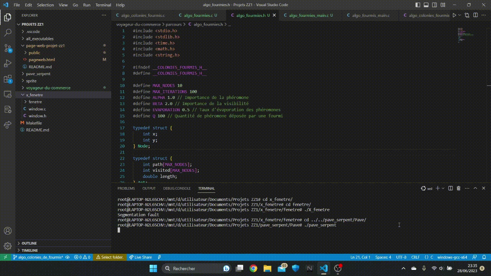Il y a 2 chenilles qui se déplacent à une vitesse différentes à travers la fenêtre.
Animation :
Bourdiaux Pierre

En gérant le mouvement de chaque élément, j'ai créé un effet de parallaxe, le lapin va vite par rapport aux montagnes.
Momen Morgan
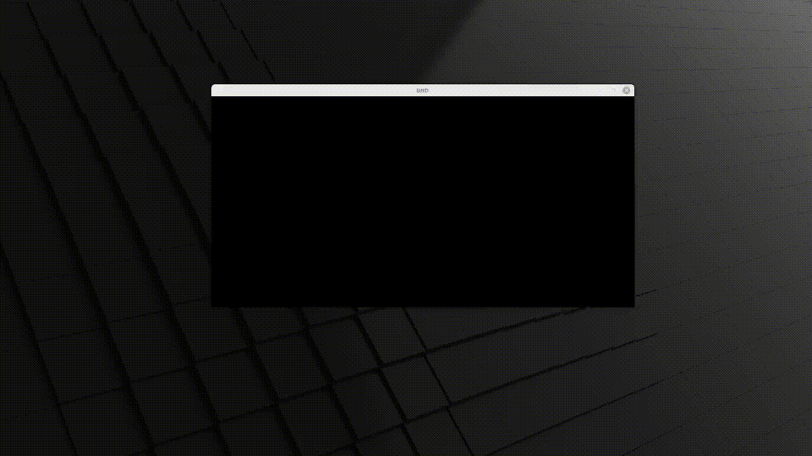Il s'agit d'un personnage qui cours dans une une forêt avec parallaxe.
Bonnet Pierre

C'est une animation ou un ninja/guerrier se déplacent avec un dinosaure comme compagnon, avec dans le fond un décor qui défilent avec un léger effet de parallaxe.
Premier travail en groupe : Le voyageur de commerce
Rendu Final
Deux Cas Possible (Succès ou Echec)
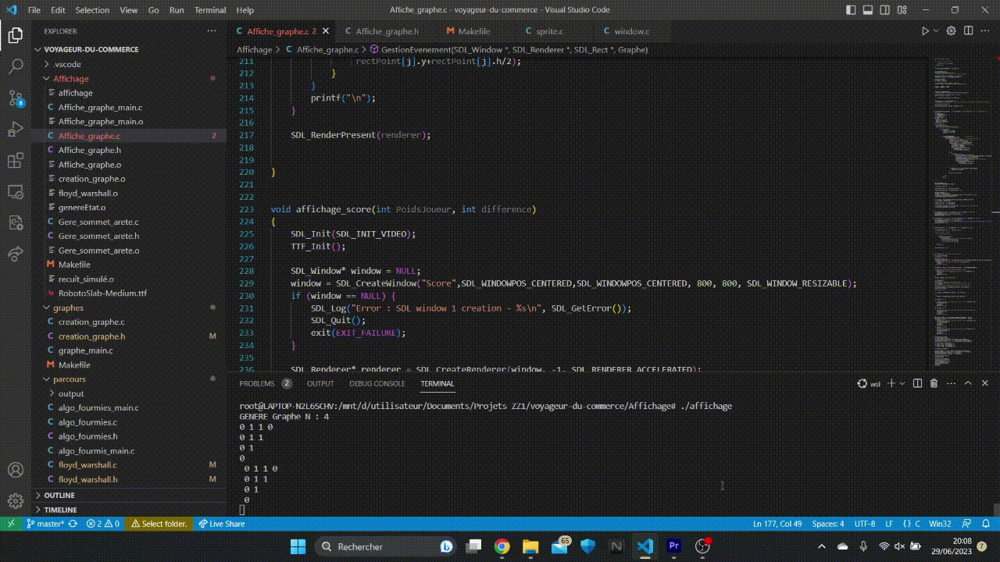Lors d'un echec un message s'affiche pour nous l'annoncer et pour nous dire de combien on se trompe, comme ici on utilise les pixels comme échelle, moins de 500 de différences on est assez proche.
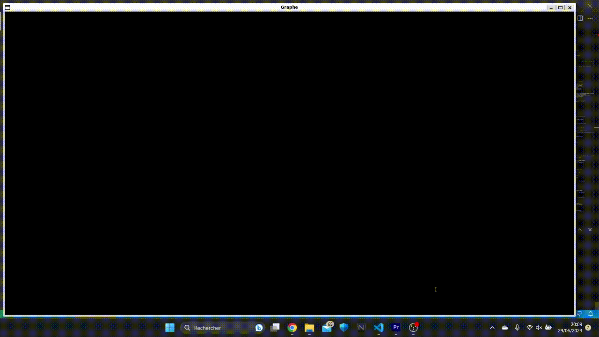Lors d'un succès un message s'affiche pour nous féliciter de la réussite.
Détail du projet
Chemin optimum par l'algorithme de recuit simulé
Le principe de cet algorithme est de compléter un graphe avec floyd_warshall, puis celui-ci permutera les sommets d'un cycle hamiltonien de nombreuses fois jusqu'à trouver le meilleur chemin.
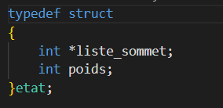Cette structure est nécessaire pour le bon fonctionnement de l'algorithme de recuit simulé, il comporte la liste des sommets avec un entier Poids correspondant au poids lorsqu'on a traversé tout ces sommets.
Chemin optimum par l'algorithme de colonies de fourmies
Le principe de cet algorithme est de faire parcourir aléatoirement le graphe (qui doit être complet) par une centaine d'individus qui évaluerons plus le meilleur passage pour augmenter la probalité qu'il soit repris lors d'un autre passage.
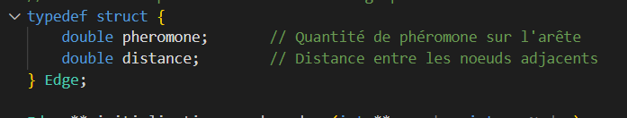Nouvelle structure de graphe qui va permettre de définir en même temps la distance entre 2 points (correspond au poids de l'arête) et la quantité de phéromones déposé sur cette arête.
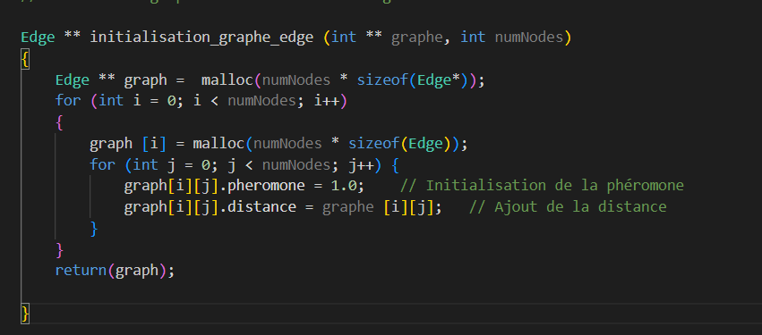Fonction qui permet de transformer un graphe complet en un graphe complet qui contient la quantité de phéromones sur chaque arête.
Affichage du graphe
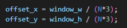
Permet de partitionner la fenêtre en (N*3)² de case pour pouvoir placer aléatoirement les sommes
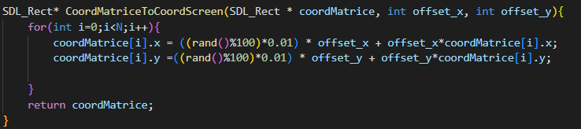Fonction qui permet de convertir les coordonnées de la grille en coordonnées d'écran. (coordMatrice[i] Contient la structure avec l'indice de la ligne est de la colonne du sommet dans la grille de l'écran)
Gource

Second travail en groupe : Chef D'oeuvre
But du projet
On voulait réutiliser les algorithmes de parcours de graphe réalisé au dernier projet. Pour ce faire on a imaginé un jeu d'arcane où on control un mineur ayant pour but de ramasser tout les minéraux de la map le plus rapidement possible, tout ça en rivalité contre la machine.
Rendu Final du Jeu

On controle notre personnage pour ramasser nos minéraux. Une fois notre partie finie, notre score s'affiche. Puis vient le tour de l'ordinateur qui nous propose un chemin idéal selon lui.
Détails important de la réalisation
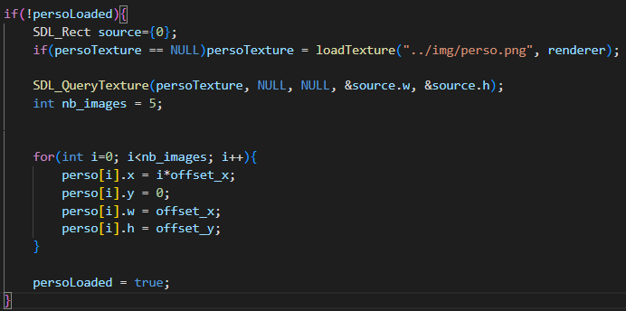
Pour creer le sprite, on charge une fois chaque image et on parcours le tableau au fil de l'execution (modulo le nombre d'image)
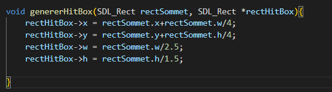Fonction qui permet de generer une hitbox legerement plus petite que la taille du rectangle ( image, sommet, ...)
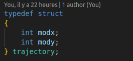Afin que le personnage contrôlé par l'ordinateur puisse parcourir les sommets, nous devons determiner de combiens de pixels il devait bouger à chaques itération. Pour cela, notre première idée était de determiner les coefficients directeurs des droites reliant 2 sommet, et d'en déduire les valeurs souhaitées
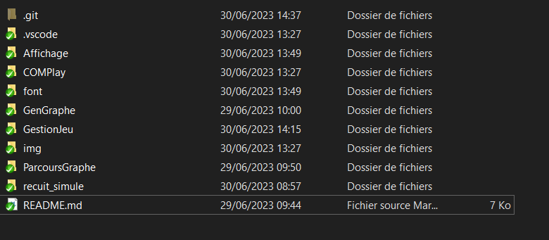
Partition du code pour la réalisation de ce jeu.
Gource